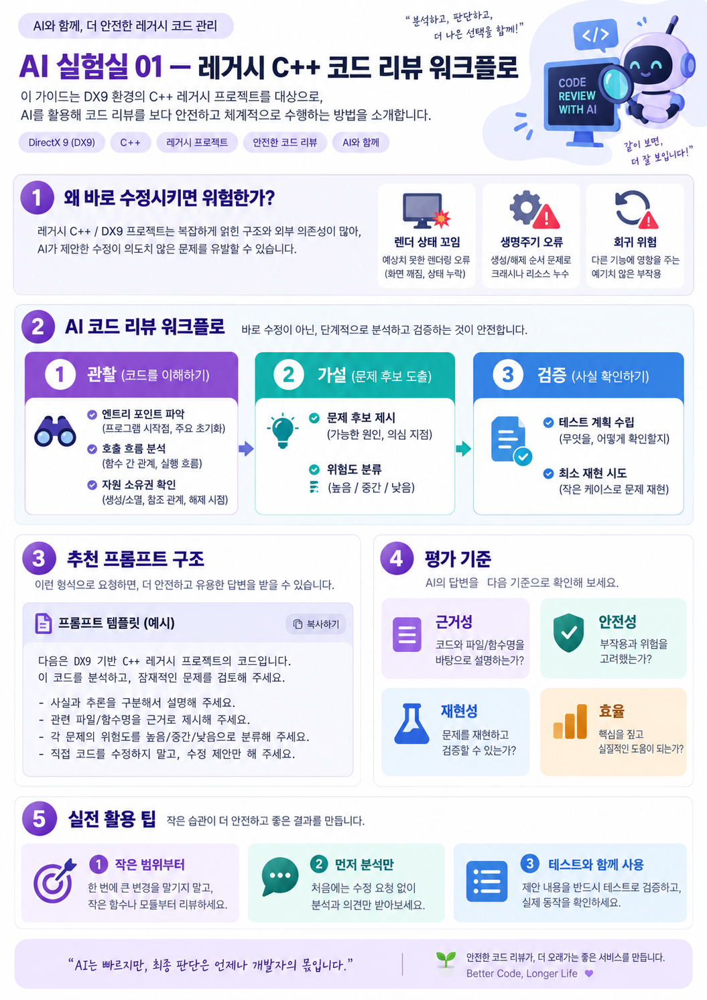

이 코드가 무엇을 하고, 누가 자원을 만들고 해제하는지 먼저 이해하기.
AI 실험실 01 — 레거시 C++ 코드 리뷰 프롬프트
AI에 코드 수정부터 맡기기보다, 먼저 위험을 분류하고 검증 계획을 받는 워크플로를 설계합니다.
AI에게 바로 수정시키지 말고, 이렇게 시작해
어디서 크래시나 렌더링 오류가 생길 수 있는지 근거를 들어 추정하기.
문제가 실제로 발생하는지 작은 테스트로 확인하기. 검증 전에는 코드 수정 보류.

실제 DX9 프로젝트로 예를 들어 볼게
- 상황: 특정 이펙트를 종료하면 가끔 화면이 깨진다. AI에게 곧바로 "고쳐줘"라고 하지 않는다.
- 관찰:
Update(),Render(),Release()호출 순서와 D3D 리소스 소유권을 정리해 달라고 한다. - 가설: 렌더 상태 미복원인지, 자원 해제 순서 문제인지 구분하고 근거가 있는 파일·함수명을 적게 한다.
- 검증: 문제가 일어나는 최소 상황과 체크 포인트를 만들고, 확인된 원인에만 작은 수정안을 적용한다.
한 줄 요약
“AI의 첫 임무는 고치는 것이 아니라, 근거를 모으고 안전한 검증 순서를 제안하는 것.”
📘 자세한 기술 설명·코드·실습 펼치기
문제: 엔진과 게임 로직이 결합된 대형 C++ 코드에서 AI가 근거 없이 리팩터링하면 렌더링 상태와 객체 생명주기를 망가뜨릴 수 있습니다.
실험 목표: 코드 변경 없이 모듈 구조, 부작용, 자원 생명주기, 회귀 위험을 먼저 식별합니다.
1. 권장 3단계 워크플로
- 관찰: 엔트리 포인트, 호출 관계, 소유권과 GPU 자원 정리 순서를 찾아 정리
- 가설: 충돌 가능한 상태 변경, 널 포인터, 해제 후 접근, 스레드 접근 위험 목록화
- 검증: 재현 시나리오와 최소 단위 테스트를 제안하고 승인 전에는 수정하지 않기
2. 바로 사용 가능한 프롬프트
역할: C++11 / DirectX9 레거시 게임 엔진 리뷰어
목표: 코드 변경 없이 결함과 구조적 위험을 분석한다.
반드시:
1. 실제 확인한 파일/함수명과 근거를 적는다.
2. 확인한 사실과 추론을 분리한다.
3. COM AddRef/Release, Reset/Lost Device,
Update/Render 순서, 객체 생명주기를 점검한다.
4. 위험도를 높음/중간/낮음으로 분류한다.
5. 수정안을 제시하되 직접 수정하지 않는다.
6. 검증을 위한 최소 재현 테스트를 제안한다.
출력:
- 실행 경로 요약
- 위험 목록(파일:라인/근거/영향)
- 확인이 필요한 가정
- 수정 우선순위와 회귀 테스트3. 평가 기준
근거성
파일·함수·라인이 실제 코드와 일치하는가?
안전성
기존 렌더링 경로를 변경하지 않았는가?
재현성
문제를 검증할 테스트 절차가 있는가?
효율
수동 코드 리뷰보다 놓치는 위험이 줄었는가?
실험 기록 양식 보기
대상 커밋: [SHA]
AI 도구/모델: [이름 및 버전]
입력 파일: [경로]
확인된 위험: [개수와 증거]
오탐: [개수]
실제 검증: [실행 테스트 결과]
다음 개선: [한 가지]
주의: 이 페이지는 실험 가이드 샘플입니다. 실제 프로젝트 코드를 실행하거나 성능 향상을 측정한 결과가 아닙니다.